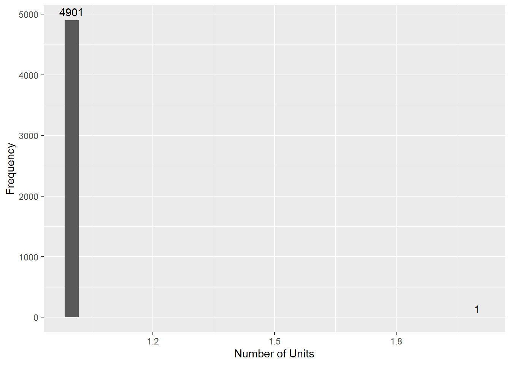
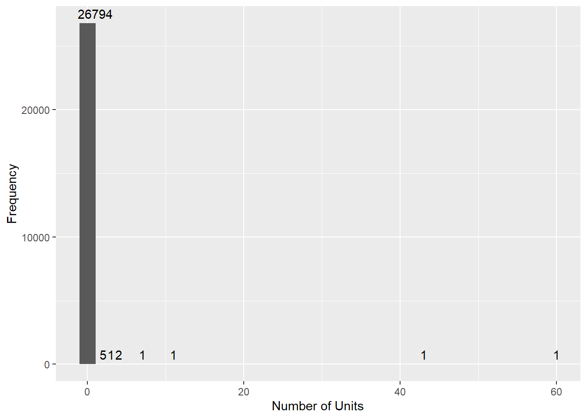
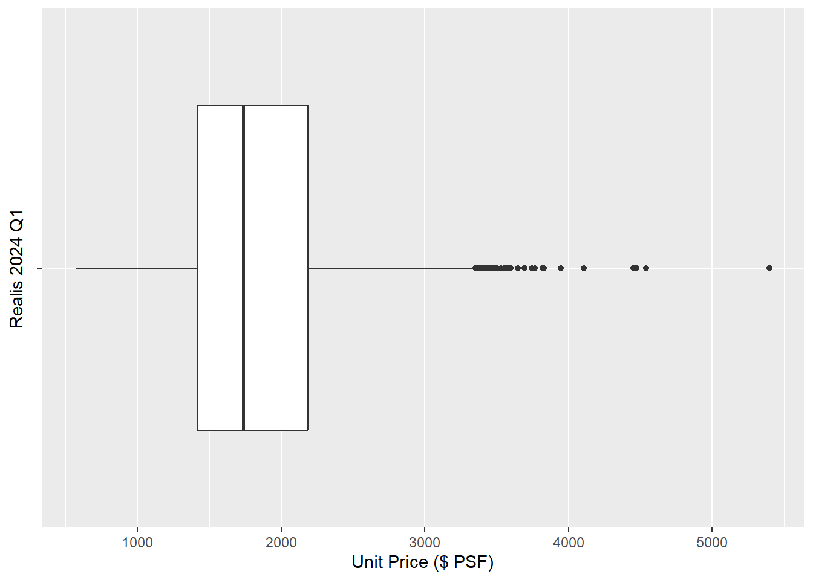
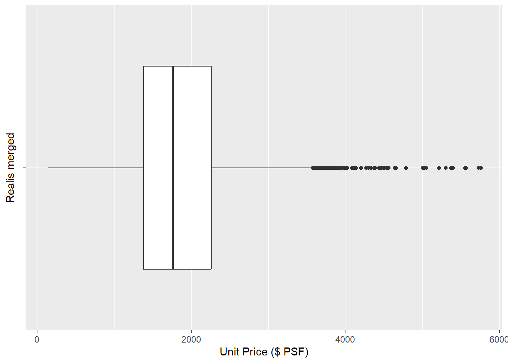
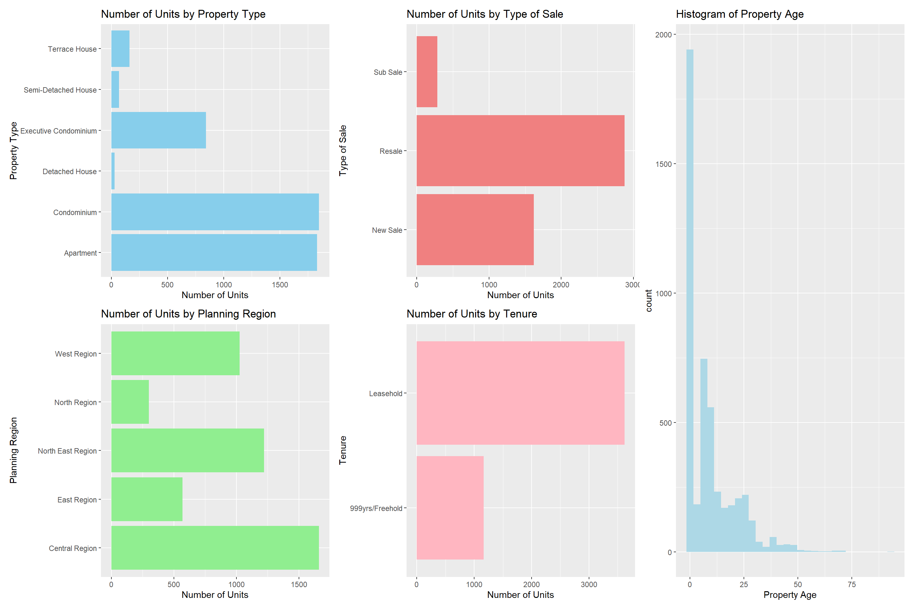
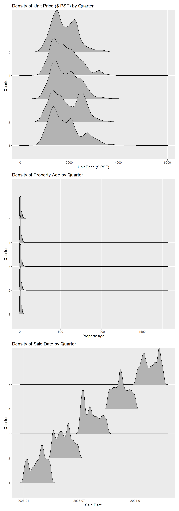
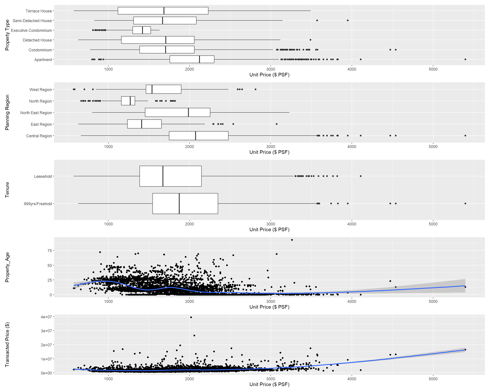

pacman::p_load(tidyverse, knitr, ggridges, ggdist, colorspace, ggrepel, ggthemes, hrbrthemes, patchwork, lubridate) Take-home Ex1
Introduction
The private residential market in Singapore is a dynamic landscape, influenced by intricate socioeconomic factors and market trends. Separate from public housing, this sector has a unique set of policies and caters to a different market segment that comprises households with monthly incomes exceeding S$14,000, which includes not only Singaporean but also foreign buyers. Understanding this market’s nuances is crucial for both policymakers and potential market participants, whom are potential clients and consumers of our media company.
This study would thus delve into the private residential market transactions in Singapore during the first quarter of 2024 and its relations to past quarters. Through data visualisation and analytics, this study would scrutinize market trends & patterns, geographical distributions and other potential interacting factors, aiming to unravel its complexities and provide insights on behaviour of Singapore’s private residential market and sub markets.
Objectives
The key objective of this study are to leverage on visual analytics in the following:
- Data Visualisation 1: To explore the distribution of unit sales over of property classification variables
- Data Visualisation 2: To discover the prevalence of these distribution patterns over the past quarters
- Data Visualisation 3: To estimate the correlation between transacted price per area and potential interacting factors
Getting Started
The code chunk below loads the following libraries:
- tidyverse: an amalgamation of libraries for data handling (including ggplot2, dplyr, tidyr, readr, tibble)
- knitr: for creating dynamic html tables/reports
- ggridges: extension of ggplot2 designed for plotting ridgeline plots
- ggdist: extension of ggplot2 designed for visualising distribution and uncertainty,
- colorspace: provides a broad toolbox for selecting individual colors or color palettes, manipulating these colors, and employing them in various kinds of visualisations.
- ggrepel: provides geoms for ggplot2 to repel overlapping text labels.
- ggthemes: provides additional themes, geoms, and scales for ggplot package
- hrbrthemes: provides typography-centric themes and theme components for ggplot package
- patchwork: preparing composite figure created using ggplot package
- lubridate: for wrangling of date-time data
Data Preparation
The main dataset, extracted from URA Realis database, contains the private residential sales transactions in Singapore in the first quarter of 2024 (2024 Q1). In addition, this study will also perform comparisons with the preceding 4 quarters, which is in fact 2023 Q1-Q4, similarly extracted from the URA Realis database.
Importing the data
The code chunk below imports 5 quarters of Private Residential Transaction data into R environment by using read_csv() function of readr package, which is part of the tidyverse package.
Realis24Q1 <- read_csv("data/ResidentialTrx2024q1.csv")
Realis23Q4 <- read_csv("data/ResidentialTrx2023q4.csv")
Realis23Q3 <- read_csv("data/ResidentialTrx2023q3.csv")
Realis23Q2 <- read_csv("data/ResidentialTrx2023q2.csv")
Realis23Q1 <- read_csv("data/ResidentialTrx2023Q1.csv")Realis_merged <- rbind(Realis24Q1, Realis23Q4, Realis23Q3, Realis23Q2, Realis23Q1)Data Variables
To get a better understanding of the variables in the original dataset, the glimpse() function is used in the following code chunks.
glimpse(Realis24Q1)Rows: 4,902
Columns: 21
$ `Project Name` <chr> "THE LANDMARK", "POLLEN COLLECTION", "SK…
$ `Transacted Price ($)` <dbl> 2726888, 3850000, 2346000, 2190000, 1954…
$ `Area (SQFT)` <dbl> 1076.40, 1808.35, 1087.16, 807.30, 796.5…
$ `Unit Price ($ PSF)` <dbl> 2533, 2129, 2158, 2713, 2453, 2577, 838,…
$ `Sale Date` <chr> "1-Jan-24", "1-Jan-24", "1-Jan-24", "1-J…
$ Address <chr> "173 CHIN SWEE ROAD #22-11", "34 POLLEN …
$ `Type of Sale` <chr> "New Sale", "New Sale", "New Sale", "New…
$ `Type of Area` <chr> "Strata", "Land", "Strata", "Strata", "S…
$ `Area (SQM)` <dbl> 100.0, 168.0, 101.0, 75.0, 74.0, 123.0, …
$ `Unit Price ($ PSM)` <dbl> 27269, 22917, 23228, 29200, 26405, 27741…
$ `Nett Price($)` <chr> "-", "-", "-", "-", "-", "-", "-", "-", …
$ `Property Type` <chr> "Condominium", "Terrace House", "Apartme…
$ `Number of Units` <dbl> 1, 1, 1, 1, 1, 1, 1, 1, 1, 1, 1, 1, 1, 1…
$ Tenure <chr> "99 yrs from 28/08/2020", "99 yrs from 0…
$ `Completion Date` <chr> "Uncompleted", "Uncompleted", "Uncomplet…
$ `Purchaser Address Indicator` <chr> "Private", "N.A", "HDB", "N.A", "Private…
$ `Postal Code` <chr> "169878", "807233", "469657", "118992", …
$ `Postal District` <chr> "03", "28", "16", "05", "21", "21", "28"…
$ `Postal Sector` <chr> "16", "80", "46", "11", "59", "58", "79"…
$ `Planning Region` <chr> "Central Region", "North East Region", "…
$ `Planning Area` <chr> "Outram", "Serangoon", "Bedok", "Queenst…glimpse(Realis_merged)Rows: 26,806
Columns: 21
$ `Project Name` <chr> "THE LANDMARK", "POLLEN COLLECTION", "SK…
$ `Transacted Price ($)` <dbl> 2726888, 3850000, 2346000, 2190000, 1954…
$ `Area (SQFT)` <dbl> 1076.40, 1808.35, 1087.16, 807.30, 796.5…
$ `Unit Price ($ PSF)` <dbl> 2533, 2129, 2158, 2713, 2453, 2577, 838,…
$ `Sale Date` <chr> "1-Jan-24", "1-Jan-24", "1-Jan-24", "1-J…
$ Address <chr> "173 CHIN SWEE ROAD #22-11", "34 POLLEN …
$ `Type of Sale` <chr> "New Sale", "New Sale", "New Sale", "New…
$ `Type of Area` <chr> "Strata", "Land", "Strata", "Strata", "S…
$ `Area (SQM)` <dbl> 100.0, 168.0, 101.0, 75.0, 74.0, 123.0, …
$ `Unit Price ($ PSM)` <dbl> 27269, 22917, 23228, 29200, 26405, 27741…
$ `Nett Price($)` <chr> "-", "-", "-", "-", "-", "-", "-", "-", …
$ `Property Type` <chr> "Condominium", "Terrace House", "Apartme…
$ `Number of Units` <dbl> 1, 1, 1, 1, 1, 1, 1, 1, 1, 1, 1, 1, 1, 1…
$ Tenure <chr> "99 yrs from 28/08/2020", "99 yrs from 0…
$ `Completion Date` <chr> "Uncompleted", "Uncompleted", "Uncomplet…
$ `Purchaser Address Indicator` <chr> "Private", "N.A", "HDB", "N.A", "Private…
$ `Postal Code` <chr> "169878", "807233", "469657", "118992", …
$ `Postal District` <chr> "03", "28", "16", "05", "21", "21", "28"…
$ `Postal Sector` <chr> "16", "80", "46", "11", "59", "58", "79"…
$ `Planning Region` <chr> "Central Region", "North East Region", "…
$ `Planning Area` <chr> "Outram", "Serangoon", "Bedok", "Queenst…Based on the output above, the both the 2024 Q1 and merged datasets have a total of 21 variables, as well as 4.9k and 26.8k rows respectively.
Data Cleaning
Before data transformation, the cleanliness of the data set is first ascertained by checking for missing and duplicate data.
Missing Data
Based on the output from Glimpse(), it is noted that there were missing values denoted by “-” for variables such as Nett Price, hence, these values are first converted to NA before we check for NA values as a whole. Noting that there are valid values such as dates that also contain “-” and multibyte values such as ENCHANTe~ in the project name col, the code uses regex to filter for “-” values instead.
colSums() and is.NA() functions are thus used to search for missing values as a whole for the 2024 Q1 dataset.
#Convert "-" values with no characters before and after to NA
Realis24Q1 <- Realis24Q1 %>%
mutate_all(~ ifelse(grepl("^-$", .), NA, .))
#Find the number of missing values for each col
colSums(is.na(Realis24Q1)) Project Name Transacted Price ($)
0 0
Area (SQFT) Unit Price ($ PSF)
0 0
Sale Date Address
0 0
Type of Sale Type of Area
0 0
Area (SQM) Unit Price ($ PSM)
0 0
Nett Price($) Property Type
4896 0
Number of Units Tenure
0 0
Completion Date Purchaser Address Indicator
118 0
Postal Code Postal District
0 0
Postal Sector Planning Region
0 0
Planning Area
0 The same step is repeated for the merged data set in the code chunk below.
#Convert "-" values with no characters before and after to NA
Realis_merged <- Realis_merged %>%
mutate_all(~ ifelse(grepl("^-$", .), NA, .))
#Find the number of missing values for each col
colSums(is.na(Realis_merged)) Project Name Transacted Price ($)
0 0
Area (SQFT) Unit Price ($ PSF)
0 0
Sale Date Address
0 0
Type of Sale Type of Area
0 0
Area (SQM) Unit Price ($ PSM)
6 0
Nett Price($) Property Type
26770 0
Number of Units Tenure
0 0
Completion Date Purchaser Address Indicator
682 0
Postal Code Postal District
0 0
Postal Sector Planning Region
0 0
Planning Area
0 From the above, the 2 variables of Nett Price ($) and Completion date contain missing values.
Check for duplicates
Using duplicated(), duplicate values in the 2024 Q1 data set of are identified and extracted in the following code chunk.
Realis24Q1[duplicated(Realis24Q1), ]# A tibble: 0 × 21
# ℹ 21 variables: Project Name <chr>, Transacted Price ($) <dbl>,
# Area (SQFT) <dbl>, Unit Price ($ PSF) <dbl>, Sale Date <chr>,
# Address <chr>, Type of Sale <chr>, Type of Area <chr>, Area (SQM) <dbl>,
# Unit Price ($ PSM) <dbl>, Nett Price($) <chr>, Property Type <chr>,
# Number of Units <dbl>, Tenure <chr>, Completion Date <chr>,
# Purchaser Address Indicator <chr>, Postal Code <chr>,
# Postal District <chr>, Postal Sector <chr>, Planning Region <chr>, …The same step is repeated with the merged data set.
Realis_merged[duplicated(Realis_merged), ]# A tibble: 0 × 21
# ℹ 21 variables: Project Name <chr>, Transacted Price ($) <dbl>,
# Area (SQFT) <dbl>, Unit Price ($ PSF) <dbl>, Sale Date <chr>,
# Address <chr>, Type of Sale <chr>, Type of Area <chr>, Area (SQM) <dbl>,
# Unit Price ($ PSM) <dbl>, Nett Price($) <chr>, Property Type <chr>,
# Number of Units <dbl>, Tenure <chr>, Completion Date <chr>,
# Purchaser Address Indicator <chr>, Postal Code <chr>,
# Postal District <chr>, Postal Sector <chr>, Planning Region <chr>, …From the above, there were no duplicates found.
Check for outliers
As a pre-cursor to visualise the distribution of unit sales and correlation of property classification factors with Unit Price (PSF), a univariate analysis is done using a box plot to identify the existence of outliers in both dependent variables - (1) No. of Units and (2) Unit Price (PSF) as follows.
- No. of units
Code
# Calculate frequency counts for each value of "Number of Units"
freq_counts <- Realis24Q1 %>%
count(`Number of Units`)
# Plot the histogram and Display frequency counts as text
ggplot(data = Realis24Q1, aes(x = `Number of Units`)) +
geom_histogram() +
geom_text(data = freq_counts, aes(label = n, y = n), vjust = -0.5) +
labs(x = "Number of Units", y = "Frequency")
Code
# Calculate frequency counts for each value of "Number of Units"
freq_counts <- Realis_merged %>%
count(`Number of Units`)
# Plot the histogram and Display frequency counts as text
ggplot(data = Realis_merged, aes(x = `Number of Units`)) +
geom_histogram() +
geom_text(data = freq_counts, aes(label = n, y = n), vjust = -0.5) +
labs(x = "Number of Units", y = "Frequency")
From the above, the data is extremely concentrated at 1 unit per transaction, with only a very small minority of less than 1% of the units that belonged to multiple-unit transactions.
- Unit Price (PSF)
Code
# Plot the box plot
ggplot(data = Realis24Q1, aes(x = `Unit Price ($ PSF)`, y=" ")) +
geom_boxplot() +
labs(x = "Unit Price ($ PSF)", y="Realis 2024 Q1")
Code
# Plot the box plot
ggplot(data = Realis_merged, aes(x = `Unit Price ($ PSF)`, y=" ")) +
geom_boxplot() +
labs(x = "Unit Price ($ PSF)", y="Realis merged")
From the above, outliers are not particularly distinct as there are quite a sizable number trailing out from the right tail of the box plot.
Data Transformation
Based on the findings above, the significance of each variable, the conclusions drawn and transformations required are summarised as follows.
S/N |
Variable |
Data Type |
Description |
Remarks |
|
| 1 | Project Name | chr | Private Residential Development Project Name | No missing values suggests that all property transactions in the data set belong to a private project development | |
| 2 | Transacted Price ($) | num | Transacted Property Sale Price | Since price is already known to be strongly correlated to Area, Unit Price (aka Price per Area) will potentially provide greater insights to multiple stakeholders. | |
| 3 | Area (SQFT) | num | Property Floor Area (aka Unit Size) in SQFT | Since price is already known to be strongly correlated to Area, Unit Price (aka Price per Area) will potentially provide greater insights to multiple stakeholders. | |
| 4 | Unit Price ($ PSF) | num | Sale Price per Floor Area in SQFT | PSF is chosen over PSM as a indicator for Price per area as a dependent variable for Data Visualisation 3. | |
| 5 | Sale Date | chr | Date of Sales Transaction | Sale date will be required for Data Visualisation 2 to provide granularity on time-wise trends across the quarters. Data type will need to be changed to Date instead of chr. |
|
| 6 | Address | chr | Detailed line of address | Address is closely related to other geographical variables, but is not selected as the preferred variable to be used in this study. | |
| 7 | Type of Sale | chr | Differentiates between
|
Type of sale will be a property classification and potential interacting variable that will be used in Data Visualisation 1, 2 and 3 | |
| 8 | Type of Area | chr | Differentiates whether the land under the property is:
|
Type of Area is closely related to property type, but is not selected as the preferred variable to be used in this study. | |
| 9 | Area (SQM) | num | Property Floor Area (aka Unit Size) in SQM | Since price is already known to be strongly correlated to Area, Price per Area will potentially provide greater insights to multiple stakeholders. | |
| 10 | Unit Price ($ PSM) | num | Sale Price per Floor Area in SQM | PSF is chosen over PSM as a indicator for Price per area as a dependent variable for Data visualisation 3. | |
| 11 | Nett Price($) | chr | Price taking away officially recorded discounts and grants by URA | Missing Values found for this variable in majority of rows, and since it has a similar purpose as transaction price, the latter will be used instead. | |
| 12 | Property Type | chr | Differentiates the property type into:
|
Property Type will be a property classification and potential interacting variable that will be used in Data Visualisation 1, 2 and 3 | |
| 13 | Number of Units | num | Number of units sold in the single transaction | Number of units is chosen as the dependent variable for Data Visualisation 1 and 2 to explore the distribution of unit sales by property classifications. To minimise complexity in the visualisation, the multiple-unit transactions which constitutes a small minority of the data, will be filtered away as outliers, which could be revisited in a future study. |
|
| 14 | Tenure | chr | Tenure period granted to the property owner over the land starting from the date of completion | Tenure will be a property classification and potential interacting variable that will be used in Data Visualisation 1, 2 and 3 To contain the wide variation in representations, the values will be binned such that all lease years less than 900 years will be classified as “Leasehold”, while values above will be classified as “999years/Freehold” |
|
| 15 | Completion Date | chr | Year when the first building project is deemed completed upon grant of the tenure of the land. | The age of the property can be derived from this variable which will be a property classification and potential interacting variable that will be used in Data Visualisation 1, 2 and 3, however, missing values were found for this variable in a small minority of rows. Hence data transformation is required to remove rows with missing values, derive property age with 2024 as a reference point, and replace “Uncompleted” properties as 0 in age. |
|
| 16 | Purchaser Address Indicator | chr | Type of residence of the purchaser’s address which he/she need not necessarily own | This could be a variable to determine if the purchaser is upgrading, downgrading or perhaps buying a 2nd property, but since there isn’t enough info on whether the buyer is actually selling their current property, significant assumptions need to be made. | |
| 17 | Postal Code | chr | Geographical code which is unique to the building address of transacted property | Postal Code is closely related to other geographical variables, but is not selected as the preferred variable to be used in this study. | |
| 18 | Postal District | chr | Geographical code which is unique to the postal district of transacted property, total of 28 districts in Singapore | Postal District is closely related to other geographical variables, but is not selected as the preferred variable to be used in this study. | |
| 19 | Postal Sector | chr | Geographical code unique to postal sector of transacted property, which is a sub area of district, total of 81 sectors in Singapore | Postal Sector is closely related to other geographical variables, but is not selected as the preferred variable to be used in this study. | |
| 20 | Planning Region | chr | Geographical region of transacted property, total of 5 regions - Central, North, North East, East and West. | Planning Region is the least complex amongst the geographical variables, and hence is selected as an ideal property classification and potential interacting variable that will be used in Data Visualisation 1, 2 and 3 | |
| 21 | Planning Area | chr | Name of geographical area of transacted property, total of 55 areas in Singapore | Planning Area is closely related to other geographical variables, but is not selected as the preferred variable to be used in this study. |
Based on the above, the data transformations required in preparation for the Data Visualisation is done and subsequently inspected using glimpse() in the following code chunk.
Code
# For version control, start by defining new transformed datasets as copies of original dataset
Realis24Q1_trfm <- Realis24Q1
Realis_merged_trfm <- Realis_merged
# Convert Sale date to date data type
Realis24Q1_trfm$`Sale Date` <- dmy(Realis24Q1$`Sale Date`)
Realis_merged_trfm$`Sale Date` <- dmy(Realis_merged$`Sale Date`)
# For Completion Date, (1) filter out missing values, (2) Calculate age of property caa 2024, (3) set Uncompleted as age 0
Realis24Q1_trfm <- Realis24Q1_trfm %>% filter(!is.na(`Completion Date`))
Realis_merged_trfm <- Realis_merged_trfm %>% filter(!is.na(`Completion Date`))
Realis24Q1_trfm$`Completion Date`[Realis24Q1_trfm$`Completion Date` == "Uncompleted"] <- 2024
Realis_merged_trfm$`Completion Date`[Realis_merged_trfm$`Completion Date` == "Uncompleted"] <- 2024
Realis24Q1_trfm$Property_Age <- 2024 - as.numeric(Realis24Q1_trfm$`Completion Date`)
Realis_merged_trfm$Property_Age <- 2024 - as.numeric(Realis_merged_trfm$`Completion Date`)
# For number of units, filter out the multiple-property transactions as outliers
Realis24Q1_trfm <- Realis24Q1_trfm %>% filter(`Number of Units` <= 1)
Realis_merged_trfm <- Realis_merged_trfm %>% filter(`Number of Units` <= 1)
# For Tenure, bin values into Leasehold and 999yrs/Freehold
Realis24Q1_trfm <- Realis24Q1_trfm %>%
mutate(Tenure = case_when(
grepl("^Freehold", Tenure) ~ "999yrs/Freehold",
grepl("^9[0-9]{2}", Tenure) ~ "999yrs/Freehold",
TRUE ~ "Leasehold"
))
Realis_merged_trfm <- Realis_merged_trfm %>%
mutate(Tenure = case_when(
grepl("^Freehold", Tenure) ~ "999yrs/Freehold",
grepl("^9[0-9]{2}", Tenure) ~ "999yrs/Freehold",
TRUE ~ "Leasehold"
))
# Review transformed dataset
glimpse(Realis24Q1_trfm)Rows: 4,783
Columns: 22
$ `Project Name` <chr> "THE LANDMARK", "POLLEN COLLECTION", "SK…
$ `Transacted Price ($)` <dbl> 2726888, 3850000, 2346000, 2190000, 1954…
$ `Area (SQFT)` <dbl> 1076.40, 1808.35, 1087.16, 807.30, 796.5…
$ `Unit Price ($ PSF)` <dbl> 2533, 2129, 2158, 2713, 2453, 2577, 838,…
$ `Sale Date` <date> 2024-01-01, 2024-01-01, 2024-01-01, 202…
$ Address <chr> "173 CHIN SWEE ROAD #22-11", "34 POLLEN …
$ `Type of Sale` <chr> "New Sale", "New Sale", "New Sale", "New…
$ `Type of Area` <chr> "Strata", "Land", "Strata", "Strata", "S…
$ `Area (SQM)` <dbl> 100.0, 168.0, 101.0, 75.0, 74.0, 123.0, …
$ `Unit Price ($ PSM)` <dbl> 27269, 22917, 23228, 29200, 26405, 27741…
$ `Nett Price($)` <chr> NA, NA, NA, NA, NA, NA, NA, NA, NA, NA, …
$ `Property Type` <chr> "Condominium", "Terrace House", "Apartme…
$ `Number of Units` <dbl> 1, 1, 1, 1, 1, 1, 1, 1, 1, 1, 1, 1, 1, 1…
$ Tenure <chr> "Leasehold", "Leasehold", "Leasehold", "…
$ `Completion Date` <chr> "2024", "2024", "2024", "2024", "2024", …
$ `Purchaser Address Indicator` <chr> "Private", "N.A", "HDB", "N.A", "Private…
$ `Postal Code` <chr> "169878", "807233", "469657", "118992", …
$ `Postal District` <chr> "03", "28", "16", "05", "21", "21", "28"…
$ `Postal Sector` <chr> "16", "80", "46", "11", "59", "58", "79"…
$ `Planning Region` <chr> "Central Region", "North East Region", "…
$ `Planning Area` <chr> "Outram", "Serangoon", "Bedok", "Queenst…
$ Property_Age <dbl> 0, 0, 0, 0, 0, 0, 20, 11, 9, 11, 8, 8, 1…Code
glimpse(Realis_merged_trfm)Rows: 26,117
Columns: 22
$ `Project Name` <chr> "THE LANDMARK", "POLLEN COLLECTION", "SK…
$ `Transacted Price ($)` <dbl> 2726888, 3850000, 2346000, 2190000, 1954…
$ `Area (SQFT)` <dbl> 1076.40, 1808.35, 1087.16, 807.30, 796.5…
$ `Unit Price ($ PSF)` <dbl> 2533, 2129, 2158, 2713, 2453, 2577, 838,…
$ `Sale Date` <date> 2024-01-01, 2024-01-01, 2024-01-01, 202…
$ Address <chr> "173 CHIN SWEE ROAD #22-11", "34 POLLEN …
$ `Type of Sale` <chr> "New Sale", "New Sale", "New Sale", "New…
$ `Type of Area` <chr> "Strata", "Land", "Strata", "Strata", "S…
$ `Area (SQM)` <dbl> 100.0, 168.0, 101.0, 75.0, 74.0, 123.0, …
$ `Unit Price ($ PSM)` <dbl> 27269, 22917, 23228, 29200, 26405, 27741…
$ `Nett Price($)` <chr> NA, NA, NA, NA, NA, NA, NA, NA, NA, NA, …
$ `Property Type` <chr> "Condominium", "Terrace House", "Apartme…
$ `Number of Units` <dbl> 1, 1, 1, 1, 1, 1, 1, 1, 1, 1, 1, 1, 1, 1…
$ Tenure <chr> "Leasehold", "Leasehold", "Leasehold", "…
$ `Completion Date` <chr> "2024", "2024", "2024", "2024", "2024", …
$ `Purchaser Address Indicator` <chr> "Private", "N.A", "HDB", "N.A", "Private…
$ `Postal Code` <chr> "169878", "807233", "469657", "118992", …
$ `Postal District` <chr> "03", "28", "16", "05", "21", "21", "28"…
$ `Postal Sector` <chr> "16", "80", "46", "11", "59", "58", "79"…
$ `Planning Region` <chr> "Central Region", "North East Region", "…
$ `Planning Area` <chr> "Outram", "Serangoon", "Bedok", "Queenst…
$ Property_Age <dbl> 0, 0, 0, 0, 0, 0, 20, 11, 9, 11, 8, 8, 1…Data Visualisation 1: Distribution of unit sales over of property classification variables
# Create bar charts for each categorical variables
plot1 <- ggplot(Realis24Q1_trfm, aes(x = `Number of Units`, y = `Property Type`)) +
geom_bar(stat = "identity", fill = "skyblue") +
labs(title = "Number of Units by Property Type", x = "Number of Units", y = "Property Type")
plot2 <- ggplot(Realis24Q1_trfm, aes(x = `Number of Units`, y = `Planning Region`)) +
geom_bar(stat = "identity", fill = "lightgreen") +
labs(title = "Number of Units by Planning Region", x = "Number of Units", y = "Planning Region")
plot3 <- ggplot(Realis24Q1_trfm, aes(x = `Number of Units`, y = `Type of Sale`)) +
geom_bar(stat = "identity", fill = "lightcoral") +
labs(title = "Number of Units by Type of Sale", x = "Number of Units", y = "Type of Sale")
plot4 <- ggplot(Realis24Q1_trfm, aes(x = `Number of Units`, y = `Tenure`)) +
geom_bar(stat = "identity", fill = "lightpink") +
labs(title = "Number of Units by Tenure", x = "Number of Units", y = "Tenure")
# Create a histogram for Property_Age
plot5 <- ggplot(Realis24Q1_trfm, aes(x = Property_Age)) +
geom_histogram(bins = 30, fill = "lightblue") +
labs(title = "Histogram of Property Age", x = "Property Age")
# Combine plots using operators
(plot1 / plot2) | (plot3 / plot4) | plot5
Taking the above at face value, the possible combination of preferences of buyers in the 5 property classifications can be inferred, as follows.
For Property Type, Condominiums, followed by Apartments and Executive Condominiums are seems to be more preferred.
For Planning Region, the Central Region, followed by Western and North Eastern Regions are preferred.
For Type of Sale, Resale is most preferred followed by New Sale
For Tenure, Leasehold is preferred over 999yrs/freehold
For Property Age, newer properties are preferred over older properties.
While the above inferences could be made, it does not equate to a causality relationship between these individual variables and unit sales, as there could be multiple other confounding variables that explains one or more of these observations, such as the following.
For example, the overall property price and hence affordability could be an underlying reason that these preferences are surfacing, which could relate to property type, type of sale and tenure, where the most preferred options tend to align with the most affordable private properties in Singapore as well.
Another confounding variable could be supply or availability of such categories of properties for sale, which could relate to the property type, type of sale and tenure, since the most preferred options are also the most abundant categories of private properties in Singapore.
Data Visualisation 2: Prevalence of distribution patterns over past quarters
# Assign quarters based on date ranges
Realis_merged_trfm <- Realis_merged_trfm %>%
mutate(Quarter = case_when(
between(month(`Sale Date`), 1, 3) & year(`Sale Date`) == 2023 ~ 1,
between(month(`Sale Date`), 4, 6) & year(`Sale Date`) == 2023 ~ 2,
between(month(`Sale Date`), 7, 9) & year(`Sale Date`) == 2023 ~ 3,
between(month(`Sale Date`), 10, 12) & year(`Sale Date`) == 2023 ~ 4,
between(month(`Sale Date`), 1, 3) & year(`Sale Date`) == 2024 ~ 5,
TRUE ~ NA_integer_
))
Realis_merged_trfm$Quarter <- as.factor(Realis_merged_trfm$Quarter)
# Create ridge plot
plot6 <- ggplot(Realis_merged_trfm, aes(x = `Unit Price ($ PSF)`, y = Quarter)) +
geom_density_ridges() +
labs(title = "Density of Unit Price ($ PSF) by Quarter",
x = "Unit Price ($ PSF)", y = "Quarter")
plot7 <- ggplot(Realis_merged_trfm, aes(x = `Property_Age`, y = Quarter)) +
geom_density_ridges() +
labs(title = "Density of Property Age by Quarter",
x = "Property Age", y = "Quarter")
plot8 <- ggplot(Realis_merged_trfm, aes(x = `Sale Date`, y = Quarter)) +
geom_density_ridges() +
labs(title = "Density of Sale Date by Quarter",
x = "Sale Date", y = "Quarter")
# Combine plots using operators
plot6/plot7/plot8
From the plots above, broad similarities can be observed across the quarters, elaborated as follows.
For Unit Price (PSF), all quarters displayed a right skew in the distribution of sales, with the peaks notably aligned at around $1,300/SQFT. This suggests that the PSF for private property sales transaction had maintained fairly consistent over the 5 quarters, with some slight deviation.
For Property age, all quarters displayed a right skew in the distribution of sales, with the peaks notably aligned close to 0. This suggests that across the 5 quarters, preferences for newer properties also maintained as a consistent trend.
On the other hand, there were notable differences for sales distribution over time, where by peaks were observed at random parts of each of the 5 quarters. A closer look at the timing of the peaks and comparing with external data sources, it is found that these peaks in fact align with the 1st 2 weekends of new project launches. Rather than seasonal, the trend in sales peaks are most significantly driven by new project launches.
Data Visualisation 3: Correlation between price per area and potential interacting factors
plot9 <- ggplot(Realis24Q1_trfm, aes(x = `Unit Price ($ PSF)`, y = `Property Type`)) +
geom_boxplot() +
labs(x = "Unit Price ($ PSF)", y = "Property Type")
plot10 <- ggplot(Realis24Q1_trfm, aes(x = `Unit Price ($ PSF)`, y = `Planning Region`)) +
geom_boxplot() +
labs(x = "Unit Price ($ PSF)", y = "Planning Region")
plot11 <- ggplot(Realis24Q1_trfm, aes(x = `Unit Price ($ PSF)`, y = `Tenure`)) +
geom_boxplot() +
labs(x = "Unit Price ($ PSF)", y = "Tenure")
plot12 <- ggplot(Realis24Q1_trfm, aes(x = `Unit Price ($ PSF)`, y = `Property_Age`)) + # Corrected the aes function
geom_point() +
geom_smooth()
labs(x = "Unit Price ($ PSF)", y = "Property Age")$x
[1] "Unit Price ($ PSF)"
$y
[1] "Property Age"
attr(,"class")
[1] "labels"plot13 <- ggplot(Realis24Q1_trfm, aes(x = `Unit Price ($ PSF)`, y = `Transacted Price ($)`)) + # Corrected the aes function
geom_point() +
geom_smooth()
labs(x = "Unit Price ($ PSF)", y = "Transacted Price ($)")$x
[1] "Unit Price ($ PSF)"
$y
[1] "Transacted Price ($)"
attr(,"class")
[1] "labels"# Combine plots using operators
plot9 / plot10 / plot11 / plot12 / plot13 
Based on the above plots, there are some visible similarities and also relative rankings for Unit Prices (in PSF) between the different categories of private properties.
For Property Type, Terrace, Semi-detached, Detached and Condominiums seem to have very similar means at around $1,700/PSF, whereas Apartments have the notably highest mean than the rest, and Executive Condominiums seems to have the lowest. While the observed for executive condominium is within expectation, since it did afterall start out at a cheaper price as part of the governments efforts to meet the masstige market needs, the observations for the rest bring an interesting insight, and is worth exploring further beyond this study.
For Planning Region, interestingly, the rankings are exactly the same as that of the unit sales, which supports the possibility that this ranking could perhaps be indicative of the a strong preference for location of private properties among buyers in the first quarter of 2024.
For Tenure, the observation brings no surprise that 999yrs/freehold is more expensive in Unit Price as compared to leasehold, which is opposite of the rankings for unit sales.
For Property Age, the scatter plot and smoothened curve seems to suggest that there is at most a weak linearity relationship between property age and unit Price.
For Transacted prices, the scatter plot and smoothened curve similarly seems to suggest that there is at most a weak linearity relationship between Transacted prices and unit Price.
References
- https://quarto.org/
- https://lubridate.tidyverse.org/
- https://www.ura.gov.sg/
- https://r4va.netlify.app/